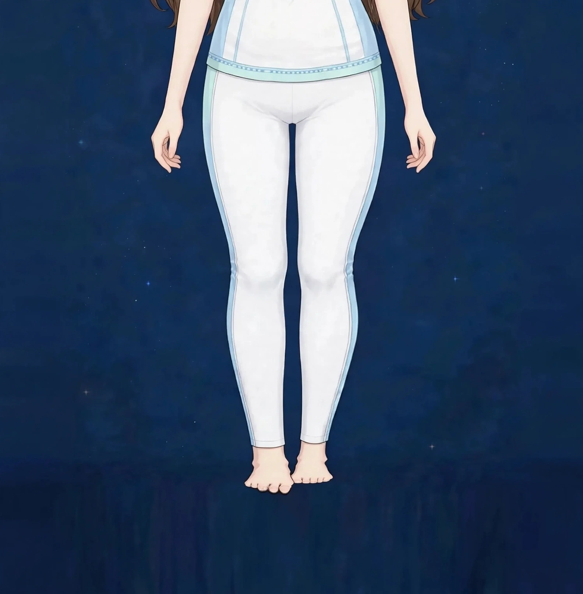

梅田で長時間移動の脚のむくみケア｜移動のあとにむくむ脚に巡り

新幹線を降りたら、靴がきつくなっていた。旅行から帰るころには、脚がパンパンで重い——長時間移動のあとの脚のむくみは、座り続けた時間の長さがそのまま表れるお悩みです。出張の多い方、旅行好きの方ほど、付き合い方を知っておきたいむくみです。
長時間移動のむくみはどんな状態か
長時間移動のあとの脚のむくみは、座った姿勢でふくらはぎのポンプがほとんど働かない時間が続き、下半身に水分が滞って表れるむくみです。移動時間が長いほど強く出て、到着後に歩くと少しずつ引いていくのが特徴です。
ポイントは、移動中は「動けない」条件が重なることです。狭い座席、靴を履いたままの足元、水分補給の遠慮、トイレを控えるための水分制限——どれも巡りを落とす方向に働きます。到着した日の夜のケアが、翌日の脚の状態を決めます。
こんなサインはありませんか？ — 長時間移動の脚のむくみのチェックリスト
- 移動のあとに靴がきつく感じる
- 到着後は脚全体が重く、だるい
- 靴下のゴムの跡が深く残る
- ふくらはぎを押すと跡がなかなか戻らない
- 移動の翌日までむくみが残ることがある
- 出張の多い時期は脚の重さが慢性化する
- 旅行の最終日に脚が限界になる
- 座席で足を組み替えることが多い
当てはまる項目が多いほど、負担がたまりやすい生活が続いている可能性があります。次の「要因」と見比べて、どこに負担が集まっているか確かめてみてください。
長時間移動の脚のむくみにつながりやすい要因
- 座り続けによるポンプ停止：座席に座り続ける間、ふくらはぎのポンプはほぼ働きません。2時間を超える移動では、むくみは避けにくいものになります。
- 座席の狭さと姿勢の固定：膝や股関節が曲がったまま固定される姿勢は、巡りの通り道を圧迫します。足を組む姿勢はさらに巡りを妨げます。
- 水分補給の控えめ：トイレを気にして水分を控えると、巡りの材料そのものが不足します。むくみ対策としては逆効果になりやすい習慣です。
- 靴を履いたままの足元：脱げない靴の中で足は圧迫され続けます。特にヒールや先の細い靴での移動は、足の負担を増やします。
- 移動前後の歩行量の差：旅行では歩く日と座る日の差が大きくなります。歩いた疲れと座ったむくみが重なることも、このお悩みの特徴です。
- 睡眠不足や時差の影響：長距離移動では睡眠のリズムも乱れます。体の調整が追いつかない状態では、むくみも引きにくくなります。
図1｜移動のあとにむくみやすい脚の筋肉（前面）

東洋医学から見た考え方
東洋医学では、むくみは「水（すい）の巡りの滞り」と捉えます。長時間動かない移動は、水を運ぶ働きが止まりやすい条件であり、下半身に水が集まるむくみとして表れると考えます。動かすことが、そのまま対策になります。
脚の内側を通る脾経は、水の巡りの見立てで中心的に関連づけられます。施術では足先から太ももへ、滞った水を押し流すような向きでオイルケアを行い、移動で止まった巡りを再開させることを意識します。
代表的なツボ
長時間移動のむくみのケアでよく挙げられるツボを紹介します。到着後のホテルや自宅で、短い時間に取り入れやすい場所です。
図2｜脚のツボの位置（前面）
おすすめ施術
オイルマッサージ
足先から太ももへ向けて、滞った水の巡りを意識してオイルで流すようにケアします。移動のあとの重い脚を、その日のうちにリセットするための施術です。
進め方は、まず足裏とふくらはぎをほぐしてポンプの働きを助け、太ももから脚の付け根まで流す流れです。出張や旅行の帰りに、梅田で降りてそのまま寄る使い方もできます。
移動中にできる対策（足首運動や水分の取り方）もお伝えします。出張が多い方は、移動のパターンに合わせた備えを一緒に考えることができます。
移動のむくみは、出張や旅行の頻度が高い方ほど、対策の差が蓄積します。移動中の足首運動と水分補給、到着後の歩行という基本を習慣化することに加え、帰阪した日の夜にケアを入れるかどうかで、翌週の脚の状態が変わってきます。
自宅でできるセルフケア
移動後のセルフケアは「歩く・足首を動かす・脚を上げる」の組み合わせが基本です。片脚だけの強いむくみと痛みがある場合や、息苦しさを伴う場合は、早めに医療機関にご相談ください。
- 1．到着後の10分歩行到着したら、まず10分ほど歩きます。ポンプを再開させることが、むくみを引かせる最も確実な方法です。
- 2．座席での足首運動移動中は1時間に一度、足首を回したり、かかとの上げ下げを行います。隣に迷惑をかけずにできる巡り対策です。
- 3．脚を高くして休む到着日の夜は、クッションに脚を乗せて10分休みます。入浴と組み合わせると、翌朝の脚の軽さが変わります。
- 4．移動中の水分補給トイレを気にして控えすぎず、こまめに水を飲みます。巡りの材料を確保することもむくみ対策です。
図3｜セルフケア「到着後の足首運動」の手順
場面別の注意
出張の帰り
梅田は交通の結節点のため、出張帰りにそのまま寄る使い方に向いています。翌日にむくみを持ち越さないための、当日のリセットです。
旅行の最終日
旅行の疲れと移動のむくみが重なる日です。帰宅後の入浴と脚上げを手厚くし、翌日を回復日に充ててください。
移動前日
長距離移動が決まっている前日に脚を整えておくと、移動中のむくみの出方が変わることがあります。備えとしての使い方もおすすめです。
受診の目安
次のような場合は、サロンでのケアの前に医療機関への受診をおすすめします。
- 片脚だけが急に強くむくみ、痛みを伴う
- むくみに息苦しさや胸の痛みを伴う
- 脚の皮膚に赤みや熱がある
- 移動のあとのむくみが数日経っても引かない
- むくみと一緒に尿の量が明らかに減っている
当店は医療機関ではなく、診断は行いません。迷うときは、まずかかりつけの医療機関にご相談ください。
よくある質問
Q．脚のむくみのページとの違いは？
脚のむくみのページは夕方のむくみ全般を、このページは長時間移動という場面に絞って解説しています。出張や旅行のたびにむくむ方は、こちらのページが合います。
Q．出張帰りに予約できますか？
はい。当店は梅田のレンタルサロンで、17:00〜22:00の営業です。新幹線や飛行機の到着時刻に合わせて、LINEでご予約いただけます。
Q．着圧ソックスは移動中に有効ですか？
移動中の着圧ソックスは巡りのサポートとして使われることが多い道具です。サイズが合っていることが前提で、痛みやしびれが出るものは使用を中止してください。
Q．飛行機の長距離移動のあとは特にむくみます。
長時間のフライトは、座る時間の長さと水分不足が重なる条件です。到着後の歩行と入浴、脚上げを組み合わせてください。強い症状がある場合は医療機関への相談を優先してください。
関連するお悩みページ
関連する経絡ページ
ご予約
ステラポラリス（大阪・梅田／女性専用）｜オイルマッサージ 90分 10,000円｜月〜土 17:00〜22:00・完全予約制・中崎町駅徒歩5分
ご予約はLINE公式アカウントで受け付けています。希望の日時と、気になる場所を送ってください。
さらに学びたい方へ：現場で使われる専門書（PR）
このページのテーマに合わせて選んだ本と、当店の施術でも参考にしている専門書です。


※本ブロックのリンクはAmazonアソシエイト・プログラムおよび楽天アフィリエイトによる広告リンクです。使用感の保証をするものではありません。